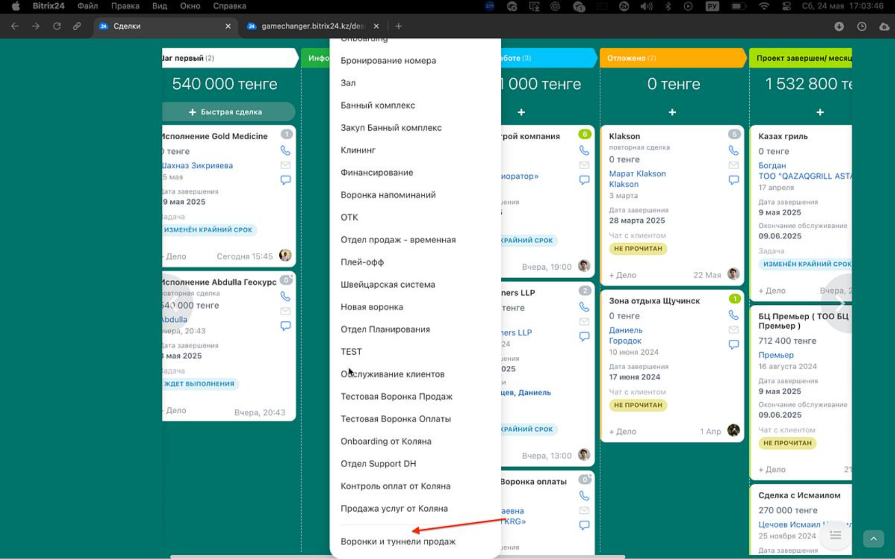
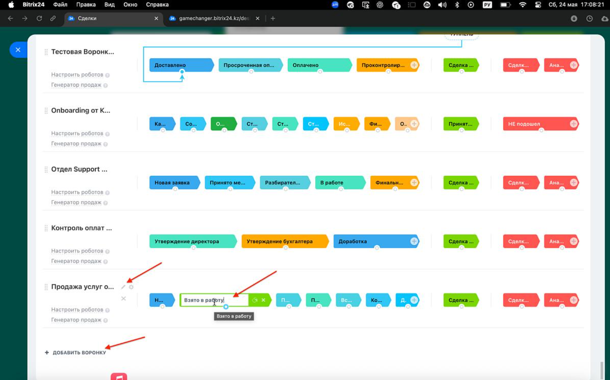
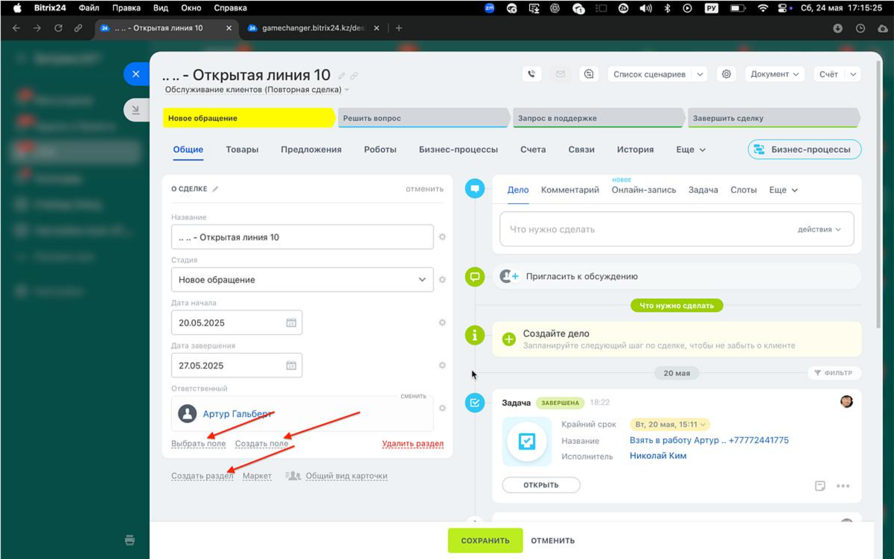
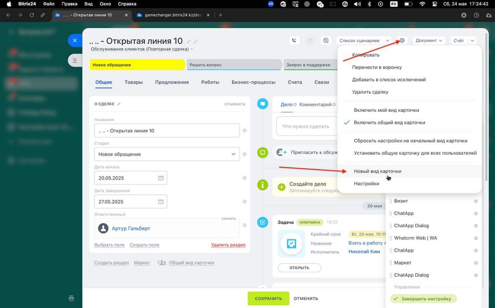
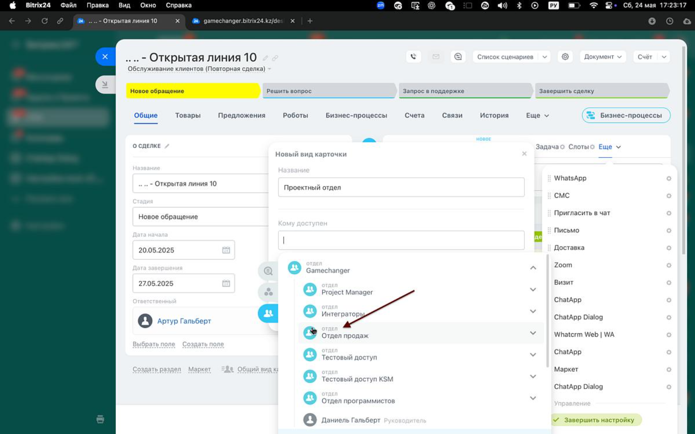

🛠️ Создание воронки
Создание воронки в Битрикс24 — важный шаг для структурирования процессов. Следуйте этим шагам:
Шаг 1: Перейдите в раздел CRM
Войдите в Битрикс24 клиента, перейдите в раздел CRM → Сделки.
 Переход в раздел CRM → Сделки
Переход в раздел CRM → Сделки
Шаг 2: Создайте новую воронку
Нажмите на название текущей воронки («Воронки и туннели продаж»), затем выберите «+ Добавить воронку».
- Задайте название воронки (например, «Продажи оборудования»).
- Создайте стадии, нажимая на «+» справа от стадии, и отредактируйте их названия.

Добавление новой воронки и стадий
Шаг 3: Создайте сделку в новой воронке
Перейдите в созданную воронку, нажмите «Создать», добавьте сделку и сохраните её.

Создаpngние тестовой сделки в новой воронке
⚙️ Настройка полей и вида карточки
После создания воронки важно настроить поля и вид карточки сделки, чтобы они соответствовали вашему процессу.
Подробный список типов полей в Битрикс24 доступен здесь.
Шаг 1: Откройте сделку и настройте поля
Откройте созданную сделку и добавьте необходимые поля и разделы.
Раздел «Входные данные»
- Дата создания — стандартное поле, тип «Дата».
- Клиент — стандартное поле, тип «Дата».
- ТЗ для инженера — тип «Файл», множественное.
- Готовый расчёт — тип «Файл», множественное.
- Товары — стандартное поле, привязка к разделу «Каталог».
- Номер договора — тип «Строка».
 Добавление полей в раздел «Входные данные»
Добавление полей в раздел «Входные данные»
Раздел «Назначить ответственного»
- Ответственный за проект — стандартное поле, привязка к пользователю.
- Дата начала работы — тип «Дата».
- Планируемая дата конца работы — тип «Дата».
- Нужно утвердить с клиентом — тип «Да/Нет».

Добавление полей в раздел «Назначить ответственного»
Раздел «Снабжение»
- Закуп — тип «Файл», множественное.
 Добавление поля в раздел «Снабжение»
Добавление поля в раздел «Снабжение»
Раздел «Проектирование»
- Чертежи/документы — тип «Файл», множественное.

Добавление поля в раздел «Проектирование»
Шаг 2: Скрытие неиспользуемых разделов
Нажмите на «Ещё» и переведите в скрытые все разделы, которые не будут использоваться менеджером.
Шаг 3: Создайте вид карточки
Создайте новый вид карточки для удобного отображения полей:
- Задайте название вида (например, «Карточка проекта»).
- Укажите, кому доступен: выберите группу пользователей.
- Установите опцию «Устанавливать автоматически» — «Да».

Создание вида карточки для сделки
Шаг 4: Настройте поля для вида карточки
Выберите созданный вид карточки и отредактируйте отображаемые поля, чтобы они соответствовали потребностям вашей команды.
✅ Карточка настроена и готова к использованию в работе.